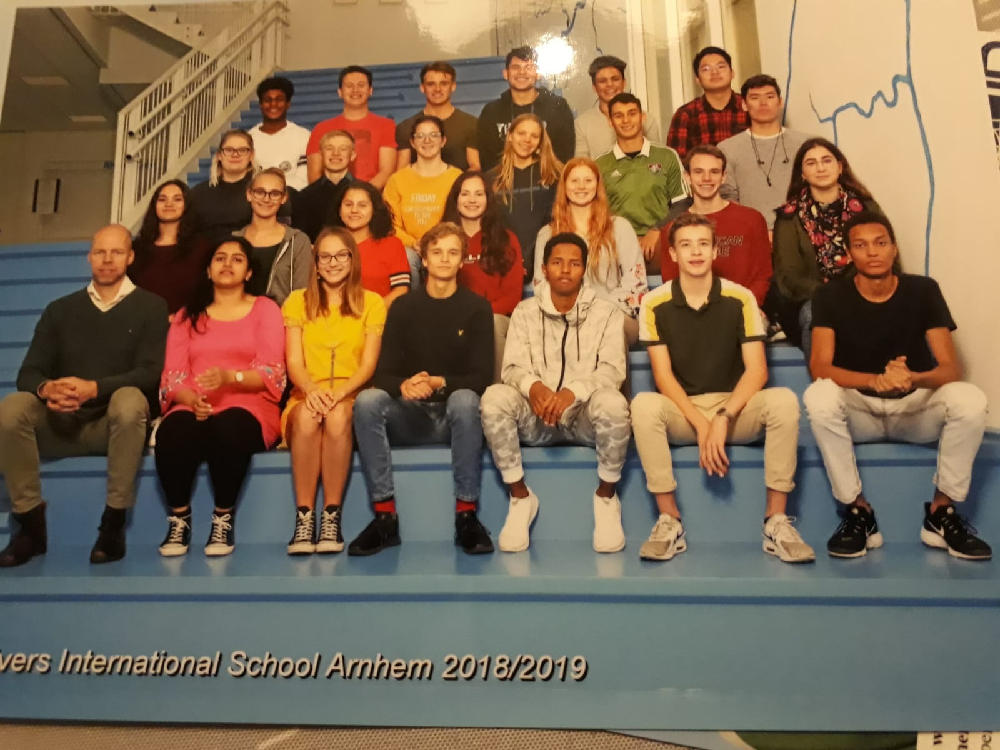
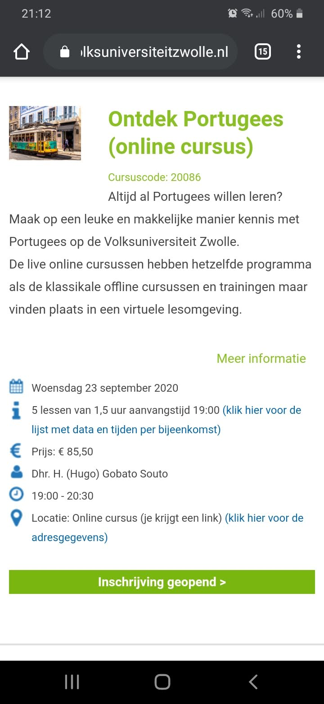
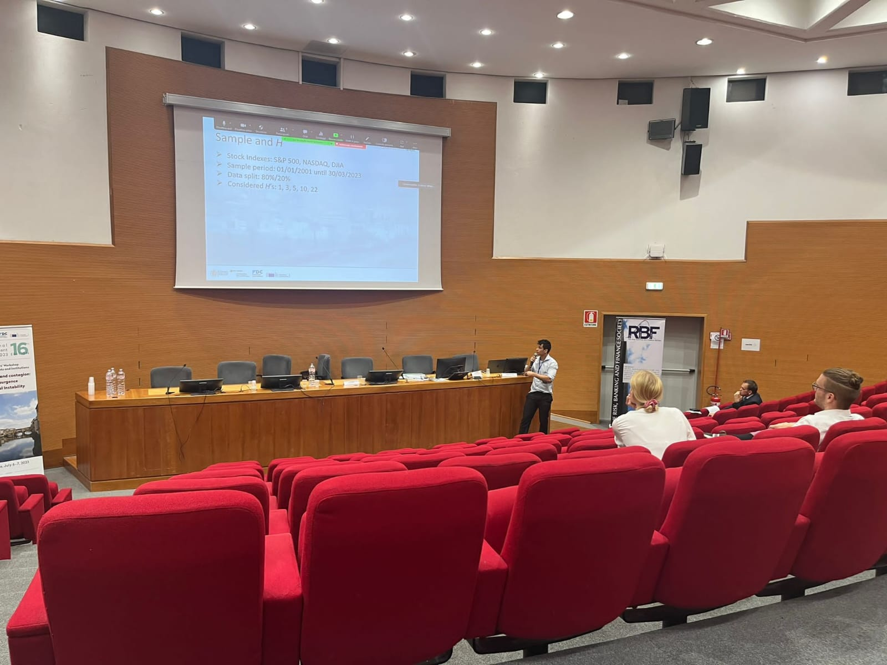
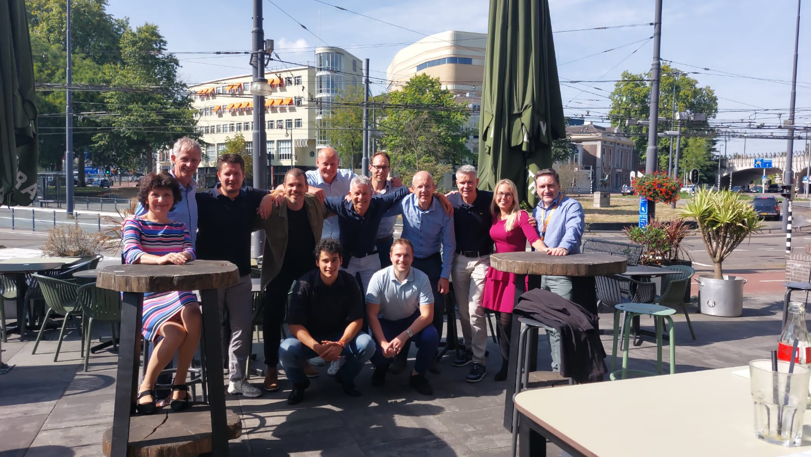
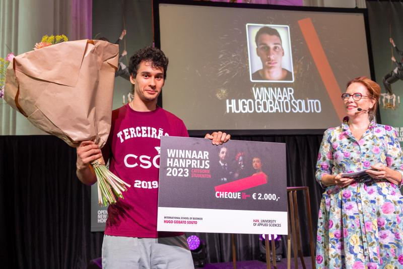
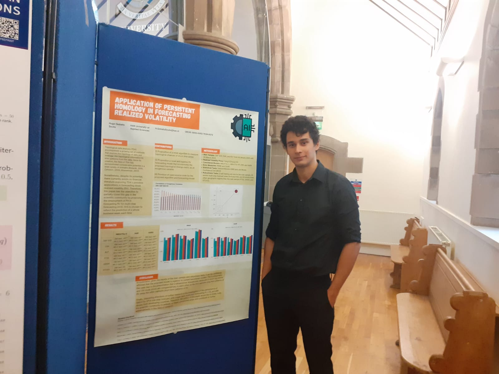
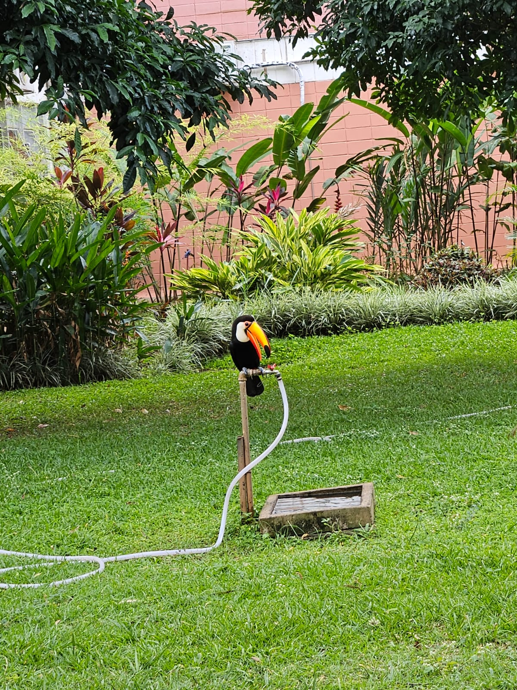
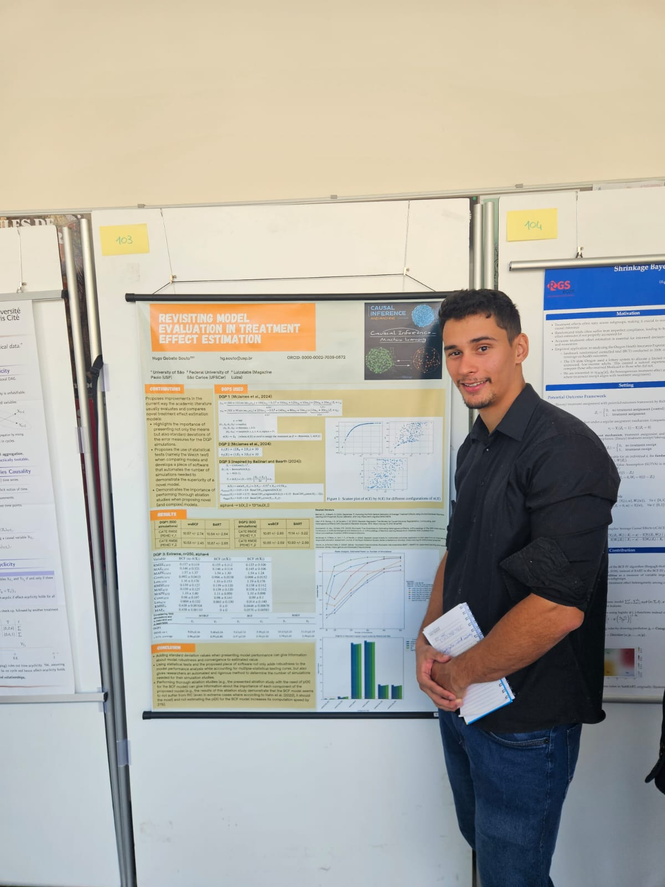
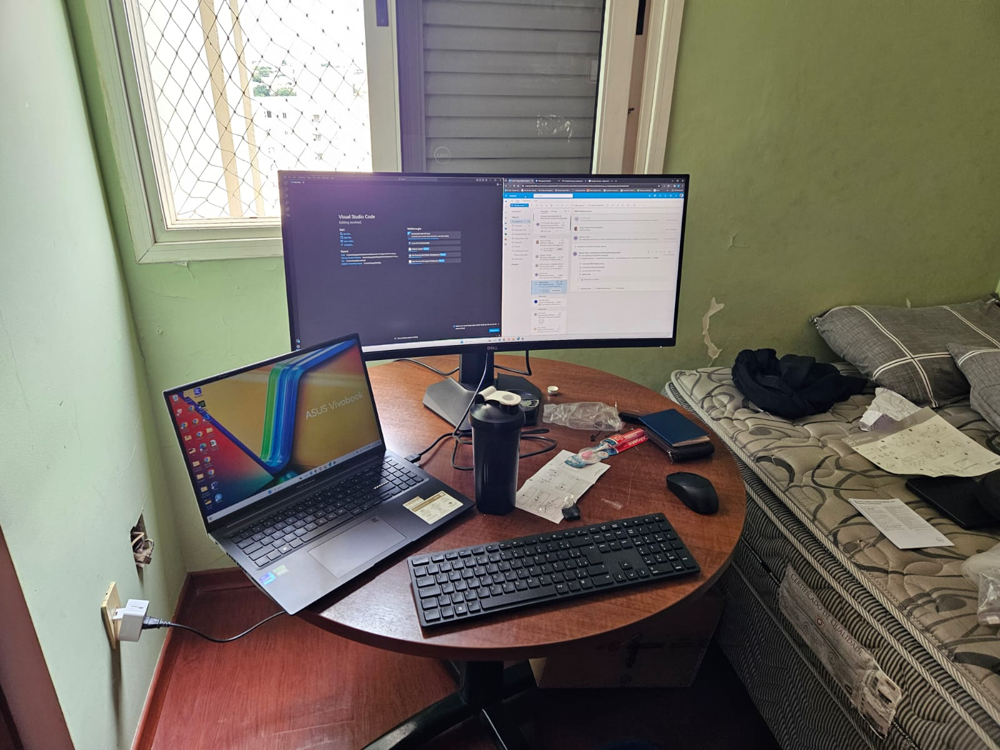
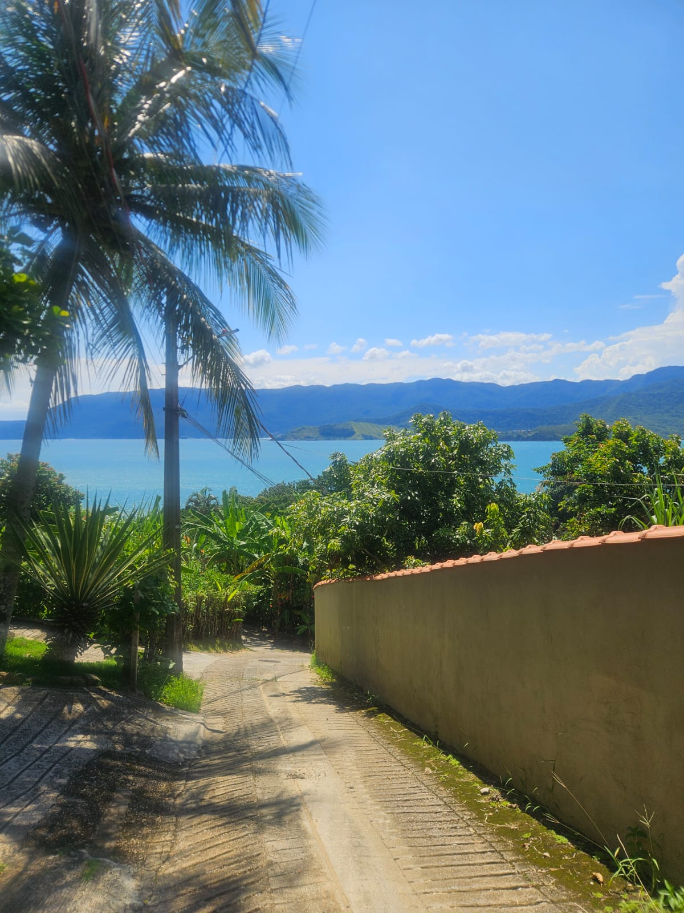

// My Story
A path built on curiosity, grit, and challenging the status quo.
The Leap
At 17, after a year of high school in the Netherlands because of my mom's Post Doc, I fell in love with the country and its culture. When my family's visa expired, I returned to Brazil — but I knew I had to find a way back. I applied for scholarships and was awarded both the Holland Scholarship and the HAN Excellence Scholarship to study International Business at HAN University of Applied Sciences in Arnhem.

Rivers International School Arnhem, 2018/2019Teaching to Survive, Learning to Thrive
With only €500/month from my parents and living costs of €1,200, I needed a job. After 35+ rejections (most due to work permit complications), I landed a position as a Portuguese teacher at Volksuniversiteit Zwolle — which grew into teaching French, English, and Dutch as well, plus private lessons. I taught myself Dutch and French independently to professional fluency.
During academic terms, I worked approximately 40 hours per week on top of my full-time studies. During vacations, this climbed to 80 hours, with up to 65 one-hour lessons per week. Through it all, I maintained an average grade of 8.85 out of 10.

Portuguese course at Volksuniversiteit ZwolleThe Research Breakthrough
Even though I was at an applied university (HBO), I felt a deep drive to do research. With no formal training in advanced mathematics, I taught myself through online courses from Columbia, UC, and HKUST. Then I started publishing — entirely on my own initiative.
During my Bachelor's alone, I published 7 research papers, including one proposing a novel financial theory using Topological Data Analysis — the Topological Tail Dependence Theory, which connects persistent homology to stock market behavior. This caught the attention of Professor Amir Moradi, who became my research mentor and collaborator.
Meanwhile, at BASF Nederland, I managed financial risk for the Hollandse Kust Zuid project — the world's largest offshore wind farm — using advanced statistical models.

Presenting at the Risk Management Conference, Florence
With the BASF Nederland teamRecognition
The hard work paid off. I was named HAN Student of the Year 2023 and won the Best Bachelor Thesis Award. I was also invited to join the OpenAI Red Teaming Network, contributing to the safety evaluation of models like GPT-4o. I presented my research at conferences in Florence, Glasgow, London, and Barcelona.

HAN Student of the Year 2023
Poster at ESOBE 2023, GlasgowNew Chapter: Causal Inference
I decided to return to Brazil to be closer to family, and pivoted my research to Causal Inference. I enrolled in a double-degree Master's in Statistics at USP and UFSCar, earning both the FAPESP and CAPES scholarships.
I quickly became an expert in the field, writing three research papers during my Master's and finishing the program ahead of schedule (September 2025 instead of March 2026). In industry, I led causal experimentation at Luizalabs (Magazine Luiza), one of Brazil's largest e-commerce companies.

Wildlife at USP — a toucan greeting at campus
Presenting causal inference research, EUROCIM 2025Today & Beyond
Now as Principal Causal AI Research Scientist at Dell Technologies, I'm exploring the frontier where Agentic AI meets Causal Inference and Causal Reinforcement Learning. With 295 citations at age 24, I continue to push boundaries — always looking for the next problem to solve, the next assumption to challenge.

Where the research happens
Ilhabela, Brazil — home baseI'm open to international opportunities and always eager to collaborate on research that challenges the status quo.